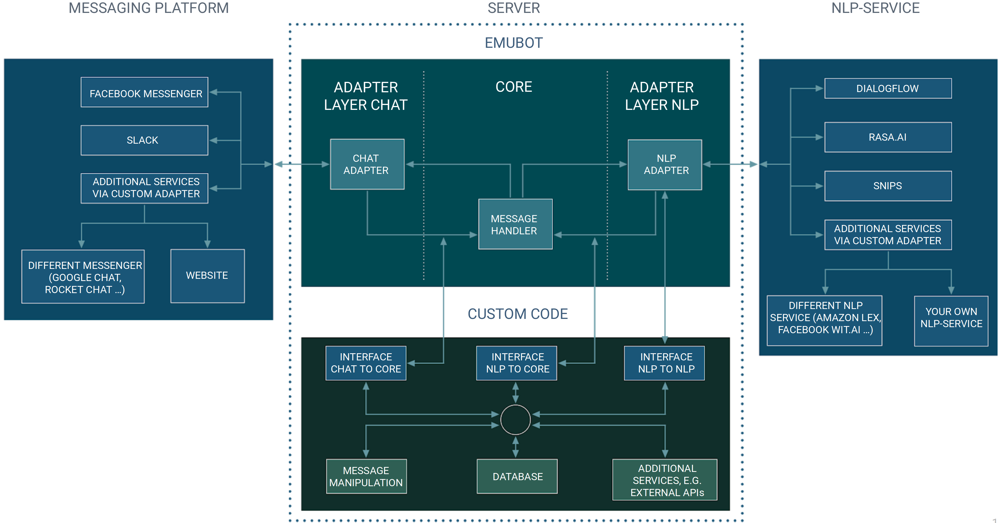

Overview¶
This section offers a short introduction to chatbots, which components are required to create a chatbot and how the emubot framework might help you.
Generally, chatbots can be structured quite simple: You might want to guide your users through some conversations according to some fixed decision tree, only offering predefined answers and not require any “understanding” of the language. This can be helpful for some tasks, but it is not really flexible and engaging.
In recent years, the capabilities of chatbots have improved significantly, even if their performance still depends a lot on the area a chatbot operates in. This rise of chatbots has mainly happened due to advances in natural language processing (NLP). NLP focuses on processing a message: this can be a transcription from text to speech, translating it or “understanding” the intention of a user to further process the message.
A variety of platforms has emerged, which offer services around processing an incoming text query to evaluate the users’ intention, filter relevant information and directly respond to the user or signal that an external service has to be used to give an adequate response. These services are often operated by large companies such as Google (Dialogflow) or Microsoft (LUIS), but (open source) startups like Rasa and Snips also have established themselves.
If you want to offer a chatbot, you as the chatbot operator usually have have to define certain intents (which requests should the bot answer) using specific entities (which words are relevant to detecting the intention and further processing the query) and possibly (often static) answers or (dynamic) external actions.
Afterwards you can often directly connect a messaging platform to your NLP service, which is then able to guess the intention and reply to the user by using the static answers or the dynamic actions which belong to this intent. While this is very simple for the operator of a chatbot and while it allows people without in-depth technical knowledge to setup their own chatbot, it also is a risk. Sensitive information could be directly connected to specific users, whose identifiers from the respective messaging platform are used to reply to the them. These identifiers can usually be used to obtain more private information and should thus be protected.
emubot Architecture¶
{kind=link}
emubot aims to replace this direct communication by adding a server as a middleware between the messaging platform, where you communicate with
the users of your chatbot, and the NLP service which is the heart of your chatbot and allows you to answer the queries in a satisfactory way.
It is visible in the graphic above that messaging service as well as NLP service are separated from the core of our application, where the logic resides. This is achieved by using consistent adapters, which only pass the relevant and possibly abstracted information to the core. Information relevant to you can be saved and changed before passing it to the NLP service which only receives the information required to fulfull its task (i.e. usually only the message and a user pseudonym). You do not have to rely on the integration of third parties, you can control the flow of information between the services and you can modify the queries in an easy and accessible way.
One central goal of emubot is requiring as little technical knowledge as possible and offering step-by-step guides for people who have never touched
code before. But we want to also allow experienced developers to leverage the modularity by adding your own adapters to connect the bot to more platforms,
and offer distinctive interfaces to allow a platform-independent communication and control over the information of your users as well as your own infrastructure.